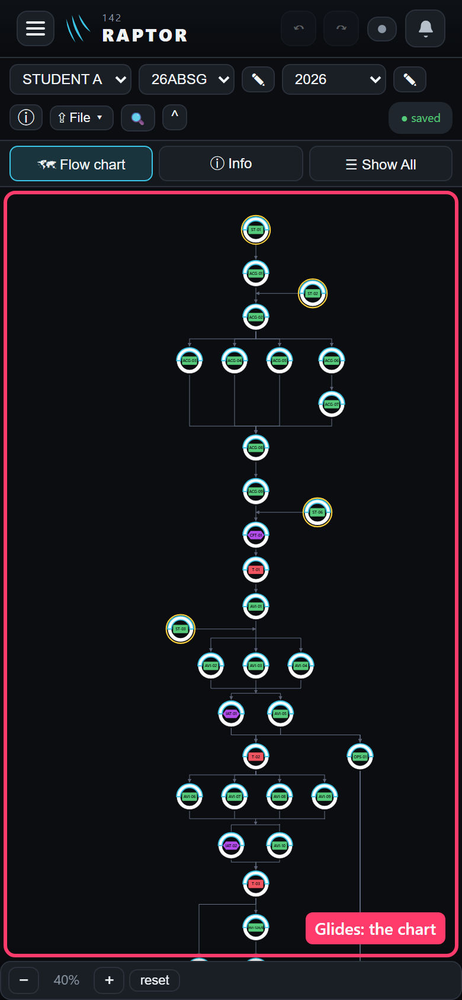
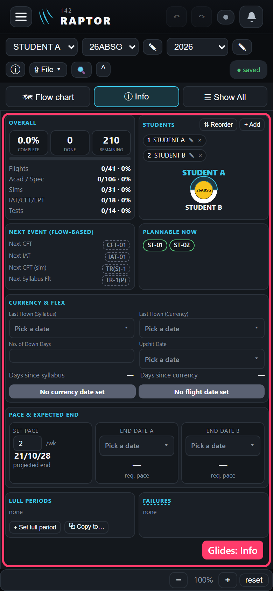
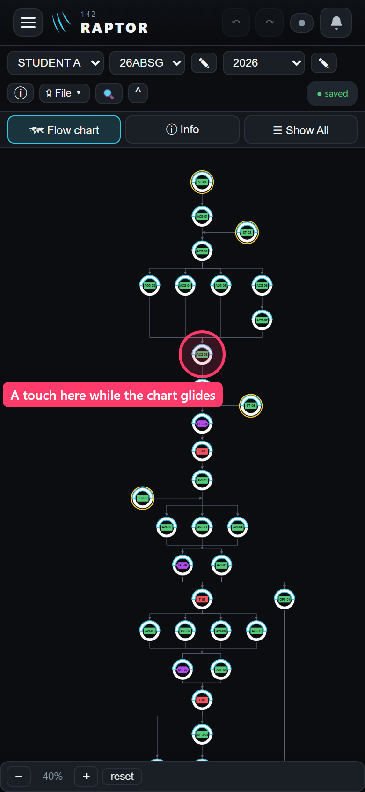
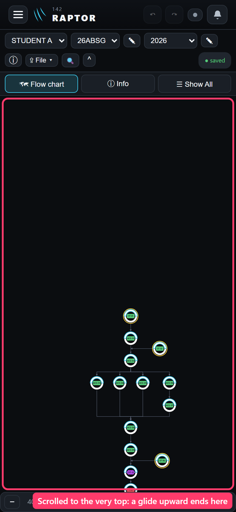
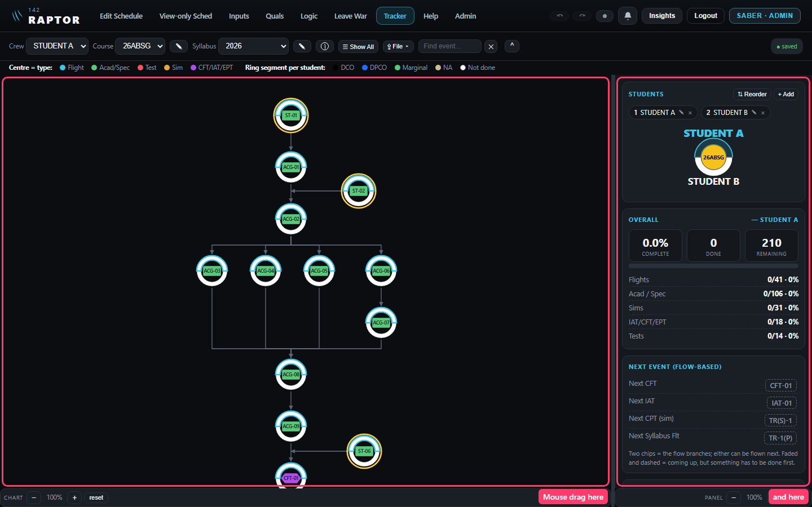

You asked for the chart and the Info tab to glide like your iPhone's own scrolling. Today both stop dead the moment your finger lifts (checked in the app on a phone-sized screen). How it feels is already your ruling: like the iPhone's own, and you judge it on your phone at the end. Three choices are left, each with my recommendation in green.
How to answer: reply 1A 2A 3A (or your letters), or as recommended. Tap any picture to see it full size. The pink boxes only point; they are not part of the app.
What will glide
The chart, and the Info tab
A flick with one finger carries the view on after you lift, slowing to a stop. A faster flick goes further; a slow drag that you stop before lifting doesn't glide.

The chart, on a phone

The Info tab (on an iPad or a desktop, the Info half beside the chart)
Question 1 · A touch while it glides
You touch the chart while it is still gliding. What happens?
Say the chart is still moving and your finger comes down on ACG-08.
A
The glide stops. Nothing opens.Recommended
This is what your iPhone does: a tap on a list that is still moving stops it and doesn't open the row. You touched it to stop it, not to mark ACG-08, and an unwanted marking pop-up would have to be closed again. A second tap opens it as normal.
B
The glide stops, and the touch also opens ACG-08's marking pop-up.
One tap fewer when you meant to open it; a pop-up you didn't want when you only meant to stop.

The touch, on ACG-08
Question 2 · At the end of the chart
A glide reaches the chart's end. Does it bounce?
The chart already has empty space above its first event and past its edges, so any event can be brought to the middle.
A
It slows and stops at the end. No bounce.Recommended
A bounce would only flash more empty space past the space already there. The app's design guide asks for quiet movement with no bounce, and a screen you work on many times a day reads better without it.
B
A small bounce at the end, like your iPhone's lists.
Closer to the iPhone's own feel; more movement, and one more thing to get right on every screen size.

The chart's top, as built: where a glide upward ends
Question 3 · A mouse on a desktop
Does a mouse drag glide too?
On a desktop you can grab the chart or the Info half with the mouse and drag it. Today it stops where you let go.
A
Only a finger glides. A mouse drag stops where you let go, as now.Recommended
A finger means your iPhone, an iPad or a touch-screen laptop. With a mouse you drag the view to where you want it and expect it to stay there. A desktop trackpad's two-finger scroll and a mouse wheel already glide by themselves.
B
A mouse drag glides too.
The same everywhere, but the view may drift past the place you dragged it to.

Desktop, as built: the two places a mouse drag scrolls
My calls (no answer needed; tell me if you want any different)
Two fingers on the chart stop a glide at once. The pinch to zoom, and how it takes back a stray first-finger move, stay as they are.
When the app moves the chart itself (picking a student, a search, the keyboard), the glide stops and the app's move wins, landing as you ruled on 17 Oct.
The glide stays on when the iPhone is set to reduce motion. The iPhone's own scrolling glides then too: it is the scroll itself, not an effect.
Edit chart layout is not touched; it moves its canvas its own way.
A drag or a glide still never opens an event when the finger lifts, as today.
Reply with:1A 2A 3A (or your letters), or as recommended.